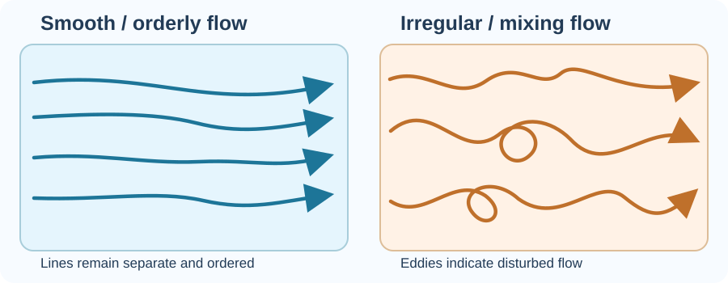
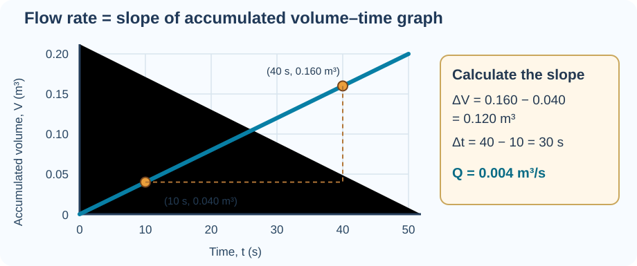

Laminar / ordered
Fluid motion is organized into smooth paths or layers, with relatively little mixing across them. In a typical real viscous pipe flow, near-wall layers can move more slowly than the central layers.
GRADE XI · FLUID MECHANICS · TOPIC 6.3
Recognize ordered and turbulent motion, distinguish steady flow from laminar flow, explain the assumptions of an ideal fluid, and interpret volume transferred per unit time.
V95-B3 public study preview — not a completed or officially approved Unit 6 course. Based on the teacher's private Topic 6.3 prepared master (combined PDF pp.113–136), its V94-C2.3 review and the supplied FBISE framework. Original printed NBF pp.95–96 have not undergone a complete verbatim text/figure audit. All graphics on this page are independently authored, not copied textbook scans. Individual MCQ SLO and cognitive certification remains pending.
FBISE classification is confirmed at SLO level from the supplied official framework p.11. Author-written questions and supplementary calculations are not individually board-certified.
01 · FIRST PRINCIPLES
A fluid is a substance that flows: liquids such as water and gases such as air both qualify. Fluid flow is motion of a fluid relative to a selected location or channel. We can describe how its motion changes with position, time and the surrounding boundaries.
A streamline at an instant is a curve whose direction follows the local fluid velocity. Where that velocity has one well-defined nonzero direction, distinct instantaneous streamlines do not intersect: crossing would assign two different directions to one velocity vector.
02 · RECOGNIZE FLOW PATTERNS

Fluid motion is organized into smooth paths or layers, with relatively little mixing across them. In a typical real viscous pipe flow, near-wall layers can move more slowly than the central layers.
Fluctuating motion, eddies and mixing become prominent. High speeds, bends, obstructions and sudden changes in the flow passage can promote turbulence, depending on conditions.
A gently curved path alone is not turbulence. One smooth dye streak is evidence consistent with ordered flow, but cannot establish the entire fluid's regime in every location.
The textbook associates a transition to turbulence with a critical speed. There is no single universal critical velocity for all liquids, gases, pipes and disturbances. Fluid properties, length scale, geometry and boundary conditions matter.
03 · MODELS AND ASSUMPTIONS
The teacher-prepared Topic 6.3 master lists four school-model assumptions associated with its NBF discussion. Each simplifies the physics; ordinary water and air are still real fluids.
A real steady laminar water flow still has viscosity. Conversely, an ideal-fluid model can be a useful approximation while not matching every actual physical detail.
04 · FROM CONCEPT TO DESIGN
In the prepared discussion based on NBF p.96, streamlined dolphins move efficiently through water; fast-moving vehicles use suitable external shapes to manage air resistance; and wind tunnels create controlled airflow past stationary models so engineers can compare designs.
A streamlined body can reduce disturbances and resistive effects in water. This is a qualitative biological example; a dolphin is not a Stokes-law sphere.
Body shape, size, speed and orientation influence the air resistance. A smoother shape may improve performance, but actual improvement needs appropriate testing.
Air passing a stationary vehicle model creates relative flow over its surface. Designers observe and compare the flow rather than deducing a universal car-drag force from a sphere formula.
Investigation prompt: A dye streak stays thin through a straight channel but becomes irregular after a sharp bend. The second observation is consistent with turbulence; the first alone does not prove the fluid is everywhere inviscid or perfectly laminar.
05 · SUPPLEMENTARY NUMERICAL UNDERSTANDING
The NBF topic describes volumetric flow rate in words: the volume of fluid passing a given place per unit time. For a precise measurement, consider the volume crossing a chosen cross-section during an elapsed time interval. Then:
Since [V] = L³ and [t] = T, the dimensions of volumetric flow rate are [Q] = L³T⁻¹. Key conversions: 1 m³ = 1000 L; 1 L = 10⁻³ m³; 1 min = 60 s.
Important syllabus boundary: These formula manipulations, volume–time graph and numerical exercises are teacher-developed support for the definition in Topic 6.3. They are not a separate prescribed summative calculation in FBISE B35. The equation connecting flow speed with cross-sectional area is the subject of Topic 6.4 — Equation of Continuity, and is intentionally not derived here.

06 · COMPLETE WORKED EXAMPLES
The next seven cases follow the data in the teacher's prepared Topic 6.3 Part C, examples C1–C7. They are original teacher-developed practice, not numbered NBF textbook Example 6.x / Assignment 6.x tasks. Numerical quantities are not presented as separately prescribed FBISE B35 examination questions.
In the first 20 s, 0.06 m³ passes; in the next 30 s, another 0.03 m³ passes. Find the average flow rate over all 50 s.
Common mistake: (0.003 + 0.001)/2 = 0.002 m³/s is not the correct overall average when the intervals have unequal durations. Use total volume divided by total time, or the correctly time-weighted mean.
07 · INTERACTIVE SUPPLEMENTARY LAB
This simple local calculator explores the volume/time definition using litres and seconds. It does not measure a real fluid or create an official examination result.
Use different durations to check why a simple arithmetic average of interval rates can be misleading.
All calculations happen in your own browser. These forms do not upload names, grades, input values or results. The section is a supplementary learning aid, not a measurement of pipe speed or a continuity-equation solver.
08 · REVISE AND EXPLAIN
No. In steady flow, fluid velocity at each fixed point stays constant with time. Its value can still differ at different positions.
No. A streamline may curve smoothly. Turbulence concerns irregular, fluctuating eddies and mixing, not merely curvature.
No. Incompressible means density is treated as constant, while non-viscous means internal shear friction is neglected. Real water can be approximately incompressible yet still viscous.
No. Irrotational means zero local rotation or vorticity. Streamlines may bend without requiring local spin, so straight paths are only a simplified picture.
No. It is evidence consistent with orderly flow along the observed path, but it does not establish the full velocity field or all locations in the fluid.
Topic 6.4, Equation of Continuity. Topic 6.3 defines flow patterns and ideal-fluid assumptions; the volume/time arithmetic shown here is supplementary.
Steady: velocity fixed in time at each location
Laminar: orderly, smooth paths or layers
Incompressible: fluid density constant
Non-viscous: viscosity neglected
Irrotational: zero local spin/vorticity
Supplementary rate: Qavg = ΔV/Δt (m³/s)
Return to the integrated Unit 6 Desk, explore the existing Continuity and Fluid Flow simulator, or practise the 80 Topic 6.3 MCQs. The simulator includes later continuity concepts, which are formally taught in Topic 6.4.
Provenance: private prepared Unit 6 master pp.113–136; V94-C2.3 academic review; official FBISE framework p.11. The page uses original educational graphics and author-developed calculations; no protected NBF scan, teacher PDF or grading record is published. Complete-topic source and teacher signoff remain pending.